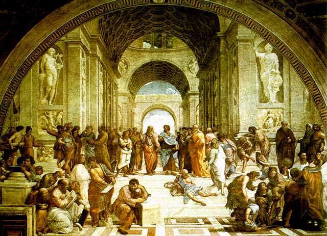

|
『时空书简』
雅典学院
作者：拉斐尔
 《雅典学院》是一幅古希腊哲学家、科学家和其他各种人物的群像。 在这幅构图宏伟的作品中，杰出的拉斐尔把希腊、罗马、斯巴达以及意大利的著名哲学家和思想家聚于一堂,巧妙地组织在宏伟的三层拱门大厅内。 上层的人物以古希腊哲学家柏拉图（左）及其弟子亚里士多德（右）为中心。一个以指头指着上天，一个则伸着右指指着他前面的世界，以此表示着他们不同的哲学观点：柏拉图的唯心主义和亚里士多德的唯物主义。以他二人为中心，激动人心的辩论场面向两翼和前景展开，构成了宽广的空间。 在这两个中心人物的两侧有许多重要历史人物：左边穿白衣、两臂交叉的青年是希腊马其顿王亚里山大，穿绿袍转身向左扳手指的是唯心主义哲学家苏格拉底，斜躺在台阶上的半裸着衣服的老人是古希腊犬儒学派哲学家狄奥吉尼。 下一层的人物分为左右两组，其中有著名历史人物，也有当时的现实人物： 左边一组中，站着伸头向左看的老者是著名的阿拉伯学者阿维洛依，在他左前方蹲着看书的秃顶老人是古希腊著名哲学家毕达哥拉斯，在他身后的白衣少年是当时教皇的侄子、有名的艺术爱好者乌尔宾诺公爵。 右边一组的主要人物是古希腊著名科学家阿基米德，他正弯腰和四个青年演算几何题。右边尽头手持天体模型者是天文学家托勒密，以及其他一些人物。 整个壁画洋溢着浓厚的学术研究和自由辩论的空气。所有的人们都是那样毫无拘束地按照自己的意志和个性在进行活动,享有充分的自由。各种人物的活动和动态，都是统一在一个为探求科学真理而自由争辩的崇高主题之中。 如果说米开朗基罗的壁画是在颂扬人的无限强大的意志和创造力,那么,拉斐尔的《雅典学院》便是唱出人类的自觉和理智的赞歌。它着重歌颂人类对智慧和真理的追求，赞美的是人类生机勃勃的、壮丽辉煌的创造之光。
© copyright Hill
|